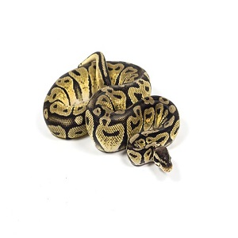
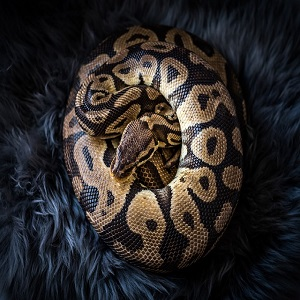
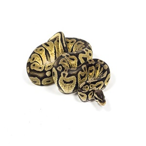
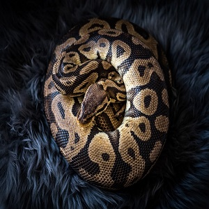
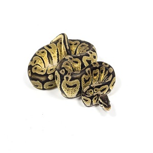
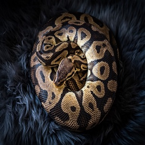

The Ball Python or Royal Python is one of the most popular reptile pets in the world. They are quite docile and relatively small only growing to around 4 feet long. Compaired to their much larger cousins the Reticulated Python, Burmese Python, and the African Rock Python they are known to be far less aggressive. In fact the Ball Python is named after its defensive posture. When threatened the Ball Python will roll itself into a ball with the head in the center to protect it, while the name Royal Python comes from the legend that rulers in Africa, especially Cleopatra, would wear the python as jewelry. With hunderds of different morphs (genetic variations in skin color and pattern) it makes them one of the most diversely beautiful exotic reptiles.

